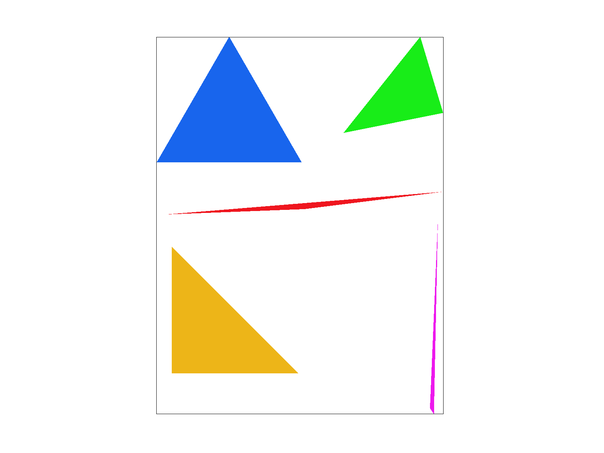
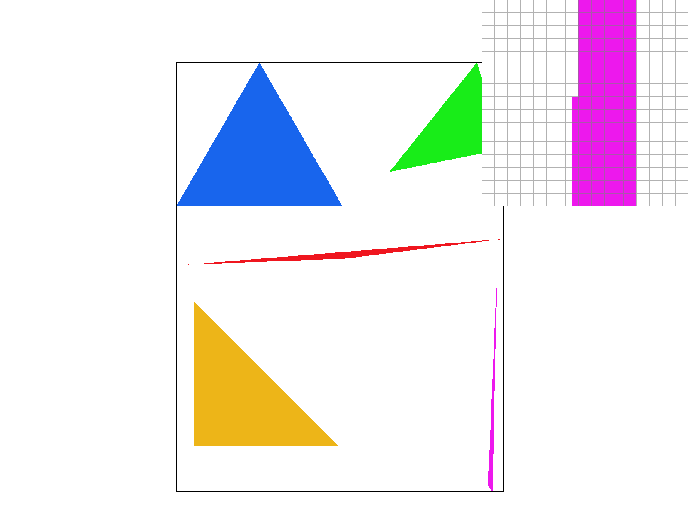
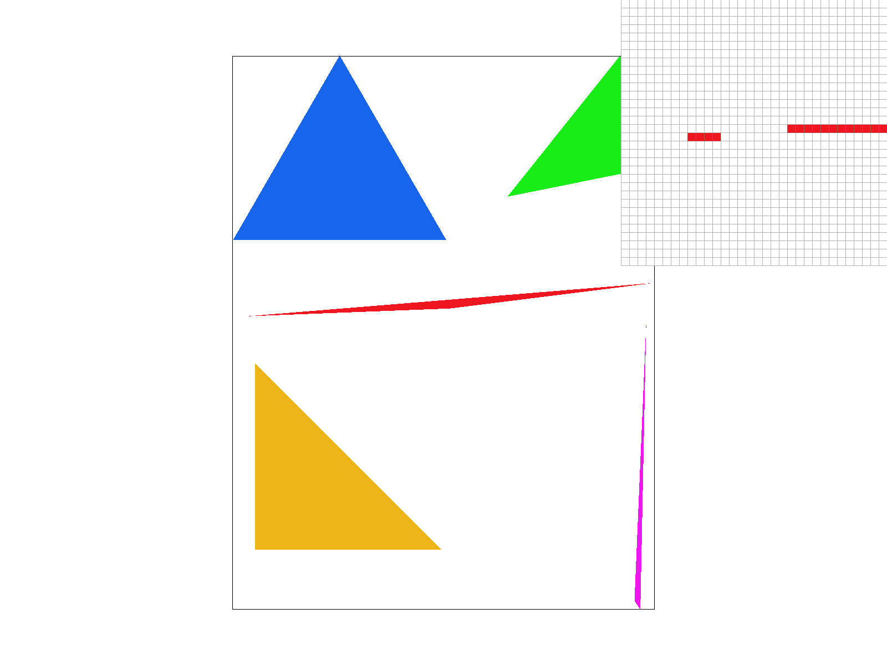
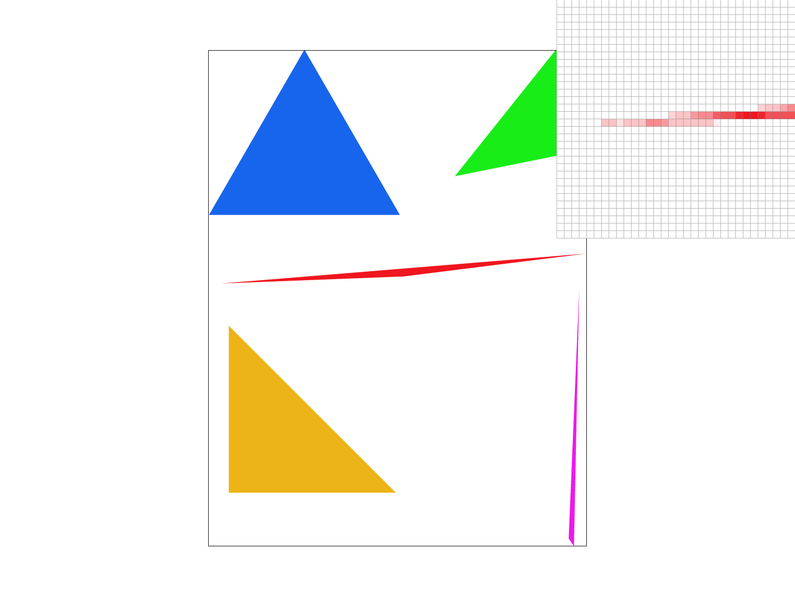
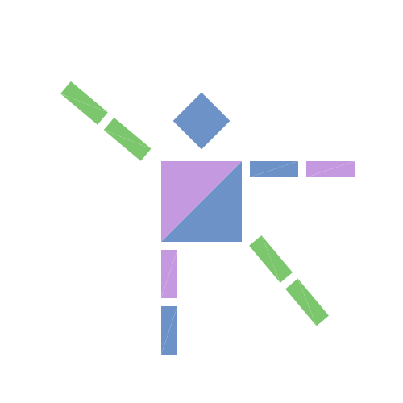
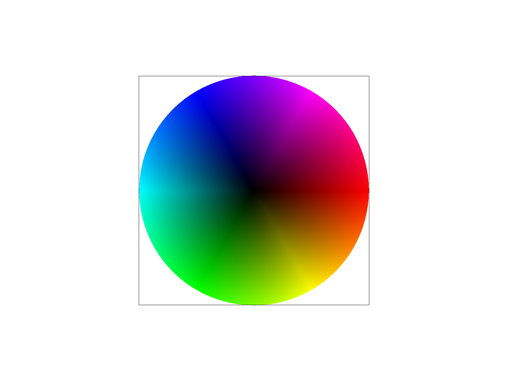
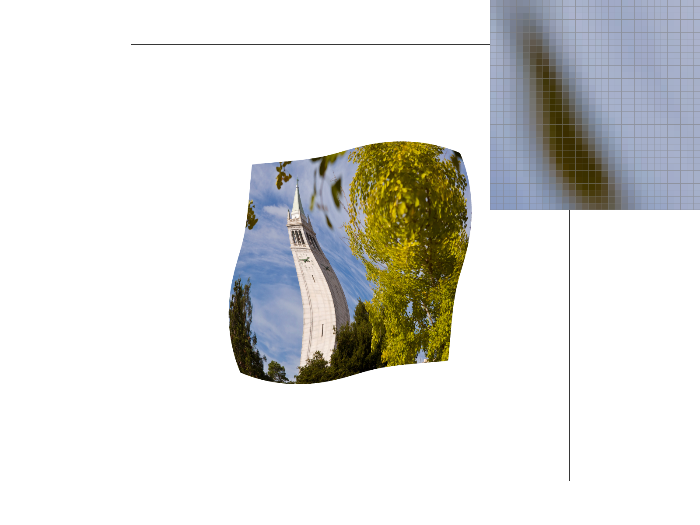

In this assignment, we implemented a comprehensive 2D vector graphics
rasterizer capable of rendering complex SVG scenes through a structured
graphics pipeline. Starting with fundamental triangle rasterization using
point-in-triangle tests, we advanced the system’s visual fidelity by
implementing supersampling for antialiasing and hierarchical transformation
matrices for coordinate manipulation. we enhanced the renderer by using
barycentric coordinates to perform smooth color interpolation and sophisticated
texture mapping, which included nearest-neighbor and bilinear pixel sampling, as
well as mipmapping for level sampling. This process highlighted the fascinating
intersection of mathematical theory and visual output, particularly the critical
role of coordinate space transformations and the performance-quality trade-offs
inherent in trilinear filtering. Ultimately, building this project from the
ground up provided deep insights into how algorithmic optimizations and
sampling techniques transform raw geometric data into polished digital imagery.
Task 1: Drawing Single-Color Triangles
For Task 1, we made the triangle rasterizer by first finding the bounding box which
is the smallest rectangle around all 3 points of the triangle using min/max x and
y coords, and then looping only pixels inside this box instead of the whole screen.
For every pixel (x,y) We tested the center point at x+0.5, y+0.5 using 3 edge functions
that check if the point on the right side of each triangle edge (if all 3 edges same sign
(>=0 or <=0)) than inside the triangle and we called fill_pixel.
This is exactly same efficiency as checking all samples in bounding box because
we only test pixels that could be inside the triangle.

test4.svg

test4.svg with pixel inspector
Task 2: Antialiasing by Supersampling
For Task 2 we did supersampling by making sample_buffer bigger
(width * height * sample_rate) so each pixel holds multiple color
samples arranged as sqrt(sample_rate) x sqrt(sample_rate) subpixels.
In rasterize_triangle we still use same bounding box loop but now for
each pixel we test all subpixel centers like (sx+0.5)/grid_size,
(sy+0.5)/grid_size with the 3 edge function tests—if inside triangle
then that subsample gets triangle color. Then resolve_to_framebuffer
averages all subsamples per pixel to final color which smooths jagged
edges bc edge pixels now have partial coverage (like 2/4 samples covered = 50% color).
This fixes aliasing bc single center sample makes sharp stair-step edges but
multiple samples capture how much triangle actually covers pixel. We updated
set_sample_rate and set_framebuffer_target to resize sample_buffer when rate
changes, fill_pixel writes to all subsamples so points/lines still work,
and = / - keys now change sample_rate live. On test4.svg, you see huge
difference—rate 1 has ugly stair-steps on thin corners, rate 4 much smoother,
rate 16 basically perfect but slow bc the traignles have thousands triangles × 16 samples each.
Pixel inspector shows edge pixels going from 0/255 to like 127/255.

test4.svg with sample rate 1
test4.svg with sample rate 4

test4.svg with sample rate 16
Task 3: Transforms
We tried to make cubeman look like he was leaning over and waving at somebody.
The green symbolizes his limbs that are sticking out because he's excited! We chose
The green symbolizes his limbs that are sticking out because he's excited! We chose
blue and purple for the rest of the body, because it makes the figure look more exciting
than having every separate shape be the same color.

cubeman leaning & waving!
Task 4: Barycentric coordinates
Barycentric coordinates let you express any point inside a triangle
as a mix of its 3 corners that always adds to 1. For example, P = αA + βB + γC
where α+β+γ=1. Near corner A, α≈1 (β,γ≈0); center is ~0.33 each. This makes it perfect
to use when you want to have for smooth colors. If A=red, B=green, C=blue, every pixel blends by these
weights. My color wheel shows this exact system, there's corner pure red, center grayish-purple
(equal mix), smooth rainbow gradients all around.

test7.svg
Task 5: "Pixel sampling" for texture mapping
Pixel sampling is the process of determining a pixel's color by
mapping its screen coordinates to continuous (u, v) coordinates on a
texture, typically via barycentric interpolation. In my implementation,
the final color is determined by either nearest or bilinear sampling.
Nearest sampling simply selects the color of the single closest texel;
while computationally efficient, it often produces blocky, jagged artifacts
known as aliasing. Bilinear sampling, however, calculates a weighted
average of the four surrounding texels, providing a much smoother
transition between colors.In the provided screenshots of the Campanile,
the superiority of bilinear sampling is most evident at 1 sample per pixel.
Using the pixel inspector on the boundary between the light sky and the
dark architectural details, nearest sampling shows harsh, staircase-like
blocks. In contrast, bilinear sampling at the same sample rate noticeably
smooths this edge by interpolating the color values. While increasing
to 16 samples per pixel helps nearest sampling by averaging multiple points
to mimic a blur, the bilinear 16x version remains the cleanest and most
visually accurate.The difference between these methods is most pronounced during
magnification, where a single texel covers multiple screen pixels. Because nearest
sampling lacks the ability to transition between discrete texel values, it creates
a fragmented, digital look. Bilinear sampling handles these discontinuities more
gracefully by blending the texels, making it essential for high-quality texture
mapping and reducing visual noise at sharp angles.
test6.svg, nearest, 1 sample per pixel
test6.svg, bilinear, 1 sample per pixel

test6.svg, nearest, 16 sample per pixel
test6.svg, bilinear, 16 sample per pixel
Task 6: "Level Sampling" with mipmaps for texture mapping
Level sampling is the technique of choosing an appropriate mipmap level,
pre-calculated, downsampled versions of a texture, to represent a fragment
based on how much it is minified in screen space. In my implementation, I
calculate the rate of change of texture coordinates $(u, v)$ with respect
to screen coordinates (x, y) to determine the footprint of a pixel; a larger
footprint necessitates a lower-resolution mipmap level to prevent aliasing.
From there, I either select the single closest mipmap level (L_NEAREST) or
linearly interpolate between the two closest levels (L_LINEAR) to find the
final color.The tradeoffs between these techniques involve balancing performance
and visual fidelity. Pixel sampling (bilinear vs. nearest) is computationally
inexpensive and uses minimal memory but only addresses local aliasing within a
single level. Level sampling (mipmapping) significantly reduces aliasing in distant
or minified objects by using pre-filtered textures, though it increases memory
usage by roughly 33% and requires more complex calculations per pixel. Samples
per pixel (supersampling) provides the highest antialiasing power for both geometry
and textures but is the most demanding in terms of speed and memory, as it
requires rendering and storing a higher-resolution buffer before downsampling.
Looking at the four screenshots of the flower logo, the impact of level sampling
is most visible in the pixel inspector at the boundaries of the yellow center
and the pink petals. In the L_ZERO versions, which ignore mipmaps, the edges
appear sharper but are prone to shimmering or noise if moved. Switching to
L_NEAREST introduces a smoother, slightly blurred effect that better
represents the high-frequency information in a minified state. While
P_NEAREST still leaves some internal blockiness, combining it with L_NEAREST
begins to mitigate the jagged edges. The combination of L_NEAREST and
P_LINEAR provides the cleanest results among these four, blending both
the texels and the appropriate resolution level to eliminate high-frequency
artifacts.The methods differ most when viewing textures at a distance or
at sharp grazing angles. Without level sampling, a small move in screen
space might jump over dozens of texels in the original high-resolution texture,
leading to chaotic aliasing. Level sampling handles this by ensuring that the
sampling rate in texture space better matches the sampling rate in screen space,
creating a stable and visually pleasing image.